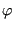
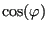
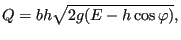

Next: Channel joint Up: Fluid Section Types: Open Previous: Step Contents
Due to a change in slope the fluid depth changes. For small slope changes this
effect is usually neglegible. For variations in  
 |
(208) |
assuming the mass flow and specific energy remain constant (no loss). For instance, a significant decrease of slope will lead to a fluid depth increase if the flow is supercritical and a decrease if it is subcritical.
The following constants have to be specified on the line beneath the *FLUID SECTION,TYPE=DISCONTINUOUS SLOPE card:
Example files: channel7.